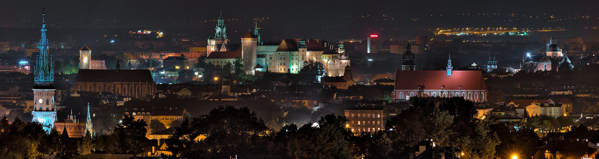
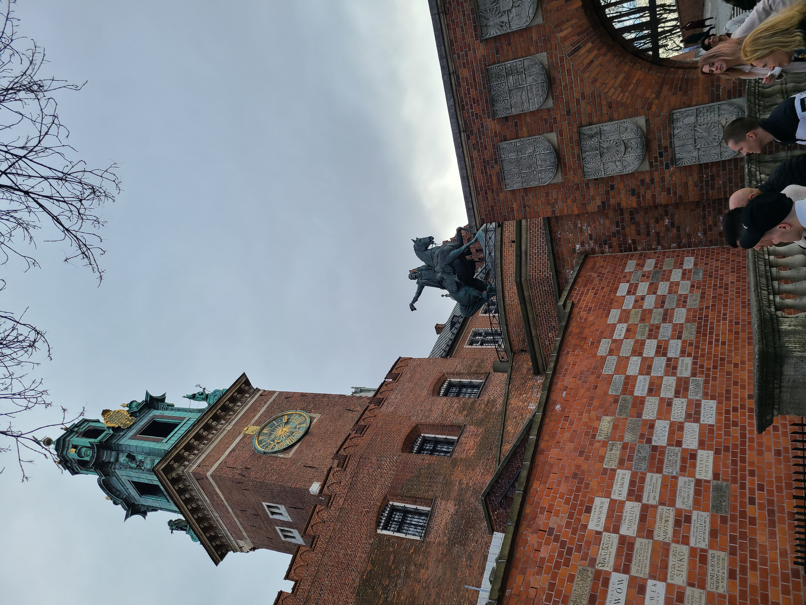
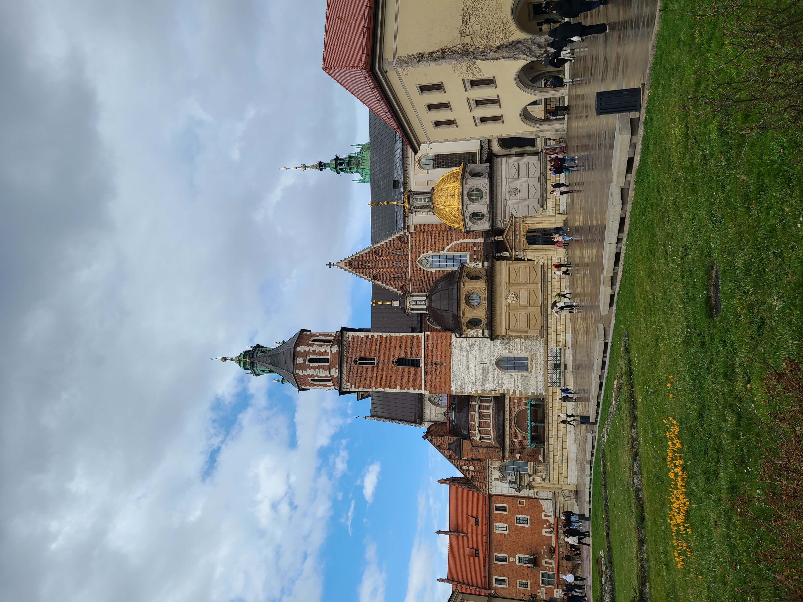

Trip
A WEEKEND IN KRAKOW
Context
At my university, we have an organization called ESN-EYE who have been created to propose activities for Erasmus students and take cares about their integration.
Thanks to them, they proposed a trip in Krakow, the old capital of Poland, where I participated.
About Krakow
Krakow is one of the oldest cities in Poland and is the capital of the Little Poland voivodeship. The city is a national cultural heritage site.
In the past it served as the capital of the state; currently it is the second largest city in Poland and is located on the famous Polish river - the Vistula.
My trip with ESN-EYE
The purpose of the trip is not only to visit the city of Krakow, but also a guided tour of the old concentration camp of Auschwitz near the city.
We went to Krakow by private coach with other students from the university on Saturday morning. We spent around 3 hours on the road before arriving at our destination.
When we arrived, we put our luggage in our hotel rooms before starting our guided tour. Firstly, we walked along the Vistula River. The sun was shining so, we took some pictures.
During our guided tour in Krakow, we visited the Wawel castle and cathedral. You can see how it looks like:

A view at the entrance of the Wawel castle.
The Wawel cathedral was a strange monument because of the different materials and styles of his construction and renovation across the time.

The front of the Wawel cathedral.
Also, we spent time around Kazimierz, the old Jewish district. I thought it was a rich place because of the Jewish legacy was intact, the Jewish buildings were well conserved, and the atmosphere was nice.
On the next day, we went on Auschwitz and had a guided tour in the old concentration camp.The atmosphere was heavy because of the hard story that this place has knew.
I felt really strange because we know the horrible things that came to people here, but we can’t really imagine how people had suffered here and all the treatment people had.
I took some picture that you can find below:


The entrance of Auschwitz-Birkenau concentraction camp
A view of the buildings inside Auschwitz concentration camp.

The wired fences of the Auschwitz concentration camp.
I really enjoyed my trip to Krakow and I recommend you to visit this beautiful city. Don’t forget to go at Auschwitz concentration camp because it is important to not forget those people who died during the World War II. I hope that you find useful information and enjoyed reading this article, don’t hesitate to read my other articles and articles written by my friends.
Sources: